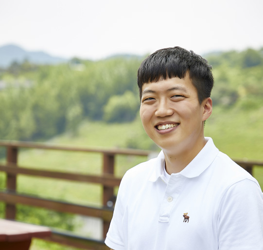
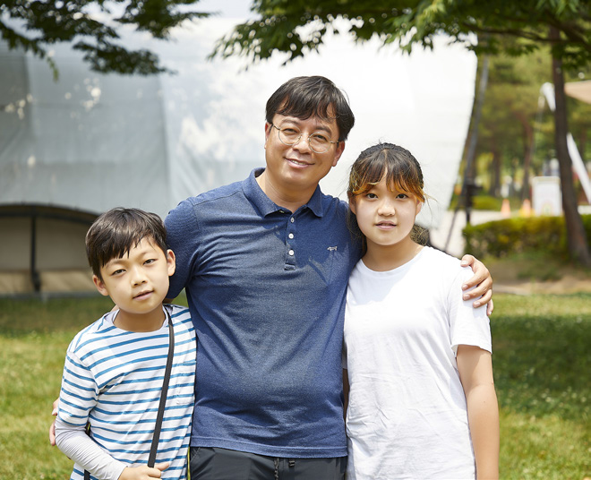

2022 봄호 Vol.67
원익 나눔 챌린지

원익인 쓰레기 줍줍! 대청호 플로깅 봉사활동
아름다운 환경을 만드는 데 많은 것은 필요하지 않다.
봉투와 집게만 있으면 끝! 아름다운 자연을 지키기 위해 원익인들이 모였다.
푸르른 대청호를 배경으로 쓰레기도 줍고 산책도 즐겼던 어느 멋진 주말.
글 - 윤민지 사진 - 한상훈 Studio 757
쓰레기 주울까, 걸을까? 둘 다 하자!
자연은 인간이 무한하게 쓸 수 있는 자원이 아니라는 공감대가 형성 되면서, 일상에서 쉽게 환경보호를 할 수 있는 ‘플로깅’이 인기다. 플 로깅(Plogging)은 스웨덴어의 ‘플로카 업(Plocka upp, 줍다)’과 ‘조가 (Jogga, 조깅하다)’를 합친 말로, 조깅하면서 동시에 쓰레기를 줍는 활 동이다. 최근 우리나라에서도 많은 사람들이 플로깅에 참여하고 있는 데, 원익인도 동참했다.
지난 6월 11일, 하늘은 푸르고 햇빛은 맑았던 주말, 푸르른 대청호를 품은 ‘대청호 로하스 캠핑장’에 하나둘 사람들이 모이기 시작했다.
아이들과 함께 온 사우 가족, 가까운 동료와 자리한 사우들, 그리고 환 경보호에 기여하겠다는 마음으로 홀로 찾은 사우들까지 총 21명의 원익인이 캠핑장을 가득 채웠다.
플로깅을 위한 준비물은 쓰레기를 담는 봉투와 집게면 끝. 집게가 없 다면 손으로도 가능하다. 깨끗한 거리를 만드는 데는 환경을 생각하 는 진심과 부지런한 손이면 충분하다. 이제 준비는 끝났다! 서로 인사 를 마친 원익 사우들이 힘차게 발걸음을 떼며 본격적으로 플로깅이 시작됐다.
21명의 원익인들은
대청호 일대를
보물찾기하듯
쓰레기 줍는 일에
삼매경이었다.
발걸음마다 깨끗해지는 길
숲길에 들어서기 전, 주차장을 가로지르며 사우 한 명이 “쓰레기다!” 라고 소리쳤다. 주차된 자동차 아래에서 담배꽁초를 찾아내 봉투에 담 는 얼굴에서 뿌듯한 미소가 번졌다. 플로깅의 시작부터 청신호다. 사 실 쓰레기를 줍는 일은 겉으로만 봐서는 줍는 게 쉽지 않기 때문이다. 숲길에 진입하자 길가에 핀 노란 금계국이 살랑살랑 손을 흔들며 응원 을 보냈다. 표면적으로는 깨끗해보이는 길이었지만 원익 사우들은 겉 만 훑으며 지나지 않았다. 집게로 풀숲을 뒤지자 숨어있던 음료수 캔 여러 개가 쏟아져나왔고, 낙엽 아래 감춰져있던 오래된 비닐봉지와 더 러운 휴지 조각이 수차례 드러났다. 금세 쓰레기로 차오르는 봉투를 보며 “쓰레기를 주워서 환경이 깨끗해지니까 좋지?”라고 묻는 아빠와 “응!”이라며 맑게 웃는 아이들의 대화가 오고 간다. 구석구석 둘러보 며 진심을 다하는 모습을 보인 원익인들은 쓰레기를 줍는 모습에서 그 열의가 남달랐다.
이날 챌린지에서 쓰레기를 주우며 만나는 자연 감상은 덤이었다. 참여 자들은 나무 기둥 아래 작게 난 다람쥐굴도 보고, 나뭇잎 향기도 맡아 보면서 아름다운 자연을 온몸으로 느끼기도 했다. 플로깅 일행 곁에는 눈부신 햇빛이 부서지는 대청호가 보석처럼 반짝이고 있었다. 30여 분 숲길을 걸었던 원익 사우들은 대청호 근처로 내려가 눈에 띄지 않는 쓰레기들을 빠짐없이 주웠다. 대청호가 오랫동안 깨끗하고 맑은 아름 다움을 간직하길 바라는 마음도 함께 담았다. 1시간 반가량 어른 아이 할 것 없이 쉬지 않고 쓰레기를 주우니 커다란 봉투에 어느덧 쓰레기 가 가득 찼다. 캠핑장으로 돌아오는 길, 아빠와 아이들은 사랑을 담아 손을 꼭 쥐었고, 동료들은 모처럼 편안한 휴식을 취했으며, 혼자 온 참 여자는 대청호의 자연을 두 눈에 가득 담았다.
씹고 뜯고 맛보고 즐기고
쓰레기를 담은 봉투는 무겁지만 돌아오는 길은 어느 때보다 홀가분했 던 참가자들. 부인, 아들과 함께 온 원익피앤이 윤영민 님은 이번 플로 깅 봉사활동에 참여하도록 팀원들을 적극적으로 독려했다. “평소에도 팀원들과 가까이 지내서 뜻깊은 활동에 참여하고 싶었다”라던 윤영민 님은 플로깅 내내 아들과 부지런히 쓰레기를 주워 눈길을 끌었다. “아 들이 쓰레기 줍는 습관을 많이 배웠어요. 다른 사람들이 영향받을 수 있도록 저부터 환경보호를 실천해야겠다고 결심했습니다.”
아름다운 꽃들의 인사를 받으며 캠핑장에 도착하니 참가자들의 얼굴 이 더욱 환해졌다! 바로 푸~짐한 바베큐 파티가 마련돼 있던 것이다. 열심히 플로깅에 참여한 아이들은 설레는 마음으로 고픈 배를 두드리 며 식탁에 자리를 잡았다. 가족과 동료들에게 맛있는 식사를 대접하 고자 두 팔을 걷어붙인 사우들은 그릴에 직접 불을 붙이고 정성스레 고기를 구웠다. 넓은 캠핑장이 금세 고기 굽는 냄새로 가득 채워졌다. 쓰레기도 줍고 즐거운 추억도 만들었던 대청호에서의 플로깅! 아름다 운 환경을 보호하겠다는 소중한 가르침까지 얻었으니 일석삼조라는 말은 딱 이럴 때 쓰는 표현일 것이다. 아이들은 가족과의 소중한 추억 을 만들고, 어른들은 어릴 적 아버지의 회사에서 열렸던 야유회가 떠 올랐던 멋진 주말, 대성공!
참가 사우 미니 인터뷰
-
이한올 님
원익피앤이 SW기술팀오늘 플로깅을 한 장소가 겉보기에는 깨끗해 보여도 구석구석에 쓰레기가 많더라고요. 비닐 쓰레기는 시간이 지나면 미세플라스틱으로 분해돼서 줍고 싶어도 주울 수가 없어 안타까웠습니다. 앞으로 많은 사람에게 플로깅이 습관이 된다면 깨끗한 지구가 될 것이라고 생각해요.
-
 조형호 님
원익아이피에스 2KH 고객지원팀올해 입사 후 처음으로 봉사활동에 참여하게 됐는데, 그중 유리병을 치운 것이 가장 뿌듯했어요. 유리병이 깨지면 다른 관광객들이 다칠 수도 있잖아요. 이번 플로깅 체험을 통해서 앞으로 분리배출을 잘하고 일회용품을 줄이는 것부터 스스로 실천해야겠다고 결심했어요. 보람 있는 일인 만큼 다음에는 권석 팀장님과 함께 참여하고 싶어요. 플로깅은 ‘사랑’입니다!
-
 전영성 님
원익머트리얼즈 생산팀해외 주재원으로 출국 전 아이들과 뜻깊은 시간을 보내고자 플로깅에 참여했어요. 둘째 아원이, 막내 민준이와 함께 쓰레기도 줍고 호수에 돌도 던지고 맛있는 식사도 하다 보니 아이들도 재미있어하더라고요. 플로깅을 마치고 나서 민준이가 “집 근처에서도 깨끗한 캠핑장처럼 쓰레기를 버리지 말자”라는 이야기를 하더라고요. 아이들과 의미 있는 행사에 참여해서 좋은 추억을 만들어 기쁩니다.
모집 마감 : 2022년 6월 7일(화)까지